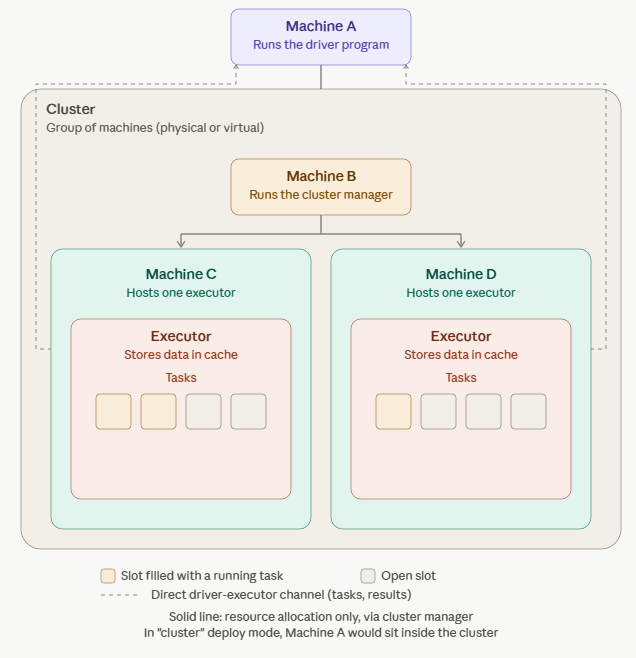

Um Spark-Anwendungen auf Databricks gezielt zu optimieren, hilft es, zunächst zu verstehen, wie Spark eine Anfrage überhaupt ausführt. Dieses Kapitel erklärt die grundlegende Ausführungshierarchie (Jobs, Stages, Tasks), die Rollen von Driver und Executor im Cluster sowie die Adaptive Query Execution (AQE) – eine der wichtigsten Optimierungstechniken moderner Spark-Versionen, die viele manuelle Tuning-Schritte überflüssig macht.
1. Wie Spark eine Anwendung ausführt: Jobs, Stages, Tasks
Der Grund, warum Spark große Datenmengen so schnell verarbeiten kann, ist Parallelität: Eine Berechnung wird in kleine Einheiten zerlegt, die gleichzeitig auf vielen Maschinen laufen. Spark strukturiert diese Parallelität in drei Ebenen:
Job – Jede ausgelöste Aktion (Action, z. B. write, count, display) startet einen Job. Ein Job ist die größte Ausführungseinheit.
Stage – Ein Job wird in eine geordnete Abfolge von Stages zerlegt. Eine neue Stage beginnt immer dann, wenn Daten neu über das Netzwerk verteilt werden müssen (siehe Shuffle, Kapitel 06-4).
Task – Die kleinste Ausführungseinheit. Der Driver erzeugt für jede Datenpartition eine Task, die von einem Executor-Kern abgearbeitet wird.
2. Die Spark-Architektur: Driver, Worker, Executor, Cores
Ein Databricks-Cluster besteht aus virtuellen Maschinen, über die eine Berechnung verteilt wird. Typischerweise gibt es einen Driver und mehrere Worker-Knoten (Databricks bietet zusätzlich einen Single-Node-Modus für Entwicklung/Tests kleiner Workloads an).
Driver – Die Maschine, auf der die Anwendung läuft. Er hält den Zustand der Spark-Anwendung, reagiert auf das Nutzerprogramm und ist verantwortlich für Analyse, Verteilung und Planung der Arbeit auf die Executor. Pro Cluster gibt es immer nur einen Driver, unabhängig von der Anzahl der Executor.
Worker-Knoten – Hostet den Executor-Prozess mit einer festen Anzahl an Executors.
Executor – Jeder Executor hält einen Teil der zu verarbeitenden Daten – eine sogenannte Spark-Partition (nicht zu verwechseln mit einer Festplattenpartition!). Executor führen die vom Driver zugewiesene Arbeit aus und melden den Berechnungsstatus zurück an den Driver.
Cores (auch Slots oder Threads genannt) – Spark parallelisiert auf zwei Ebenen: zum einen wird die Arbeit auf mehrere Executor verteilt, zum anderen besitzt jeder Executor mehrere Slots, denen jeweils eine Task zugewiesen werden kann.

Grundstruktur eines Spark-Clusters: Der Driver verteilt Arbeit an die Executor, die wiederum über mehrere Cores parallel Tasks abarbeiten.
3. Catalyst-Optimizer: Logischer und physischer Plan
Bevor eine DataFrame- oder SQL-Operation tatsächlich ausgeführt wird, durchläuft sie Sparks Catalyst-Optimizer. Dieser übersetzt die Abfolge der Transformationen zunächst in einen logischen Plan, wendet Optimierungsregeln und Kostenmodelle an und erzeugt daraus einen physischen Plan, der festlegt, wie die Berechnung konkret als RDD-Transformationen und -Aktionen auf dem Cluster ausgeführt wird. Dieser mehrstufige Optimierungsprozess ist einer der Hauptgründe, warum DataFrame- und SQL-Operationen in aller Regel deutlich performanter sind als handgeschriebene RDD-Transformationen oder Single-Threaded-Python/Pandas-Code, der gar nicht erst von Catalyst optimiert werden kann.
4. Adaptive Query Execution (AQE)
Ein statischer Ausführungsplan hat einen Nachteil: Er basiert auf Schätzungen, die vor der eigentlichen Ausführung getroffen werden und sich als ungenau herausstellen können. Adaptive Query Execution (seit Spark 3.0 verfügbar, seit Spark 3.2 standardmäßig aktiviert) löst dieses Problem, indem Spark den Ausführungsplan während der Laufzeit anhand tatsächlich beobachteter Statistiken neu optimiert. Nach jedem Shuffle- oder Broadcast-Austausch (einer sogenannten Query-Stage) liegen genaue Zahlen vor, auf deren Basis Spark bessere Entscheidungen treffen kann als jede Vorab-Schätzung.
AQE umfasst im Kern drei Optimierungen:
Dynamischer Wechsel der Join-Strategie – Stellt sich zur Laufzeit heraus, dass eine Tabelle klein genug ist, wechselt Spark automatisch von einem teuren Sort-Merge-Join zu einem günstigeren Broadcast-Hash-Join.
Dynamisches Zusammenlegen von Shuffle-Partitionen – Viele kleine, nach einem Shuffle entstandene Partitionen werden automatisch zu größeren, effizienteren Partitionen zusammengefasst.
Dynamische Optimierung von Skew-Joins – Überproportional große Partitionen (Data Skew) werden automatisch aufgeteilt, sodass die Arbeit gleichmäßiger auf die Cores verteilt wird (siehe Kapitel 06-4).
Aus dem Zusammenspiel von Catalyst und AQE ergeben sich klare Code-Empfehlungen für den produktiven Einsatz:
DataFrames oder Spark SQL statt der niedrigeren RDD-API verwenden – nur so profitiert der Code vollständig von Catalyst und AQE.
In Produktions-Jobs unnötige Aktionen vermeiden, die zusätzliche Berechnungen auslösen (z. B. count(), display(), collect()), sofern sie nicht zwingend erforderlich sind.
Operationen vermeiden, die die gesamte Berechnung auf den Driver zwingen, etwa Single-Threaded-Pandas-Code. Stattdessen die Pandas API on Spark nutzen, die pandas-ähnliche Syntax auf verteilte Ausführung über alle Cores abbildet.
Ergänzt aus der offiziellen Databricks-Dokumentation: AQE ist heute standardmäßig aktiviert und umfasst neben den drei klassischen Optimierungen (Join-Strategie, Partition-Coalescing, Skew-Handling) inzwischen auch Optimierungen, die früher manuelle Hints erforderten. Seit Databricks Runtime 13.1 profitieren im Rahmen von Project Lightspeed auch strukturierte Streaming-Queries mit foreachBatch-Sink von den dynamischen AQE-Neuoptimierungen. Die aktuelle Referenz listet die konkreten Konfigurationsparameter (z. B. Schwellenwerte für Skew-Erkennung) im Detail auf.
Quelle: Adaptive query execution – Databricks-Dokumentation
Databricks-Dokumentation (Deutsch) — erstellt aus internem Kursmaterial, ergänzt mit Inhalten der offiziellen Databricks-Dokumentation (docs.databricks.com).